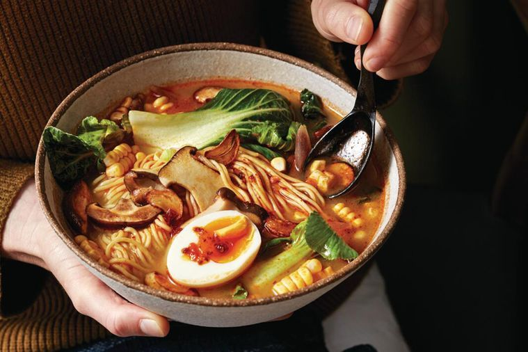

Vegetarian ramen

Spicy Vegeterian Ramen Recipe
Spicy and delicious ramen. Lovely on a cold or rainy day!
Ingredients
- 500g Fresh thing ramen noodles
- 2 Tsp vegetable oil, plus 1/4 cup (60ml) extra
- 8 Garlic gloves, thinly sliced lengthwise
- 500g Mixed mushrooms (we use shiitake, king brown, enoki and shimeji)
- 1 Red onion, cut into thin wedges
- 1/2 Cup (160g) shiro (white) miso
- 4cm Piece fresh ginger (20g), peeled, cut into thin matchsticks
- 8 Cups (2L), salt-reduced vegetable stock
- 2 Tbs rice wine vinegar
- 2 Tbs chilli oil, plus extra to serve
- 2 Bundles (6pieces) mixed baby asian greens
- 2 Corn cobs, husk and silk discarded, kernels removed
- 4 Large eggs, soft-boiled, halved
Steps
- Bring a large saucepan of water to the boil over high heat. Add noodles and gently separate noodles using a fork while water comes back to the boil. Boil for 30 seconds or until noodles are just cooked, then drain and refresh under cold running water. Drain well, then toss through 2 tsp oil and set aside in strainer set over a bowl.
- Wipe pan clean. Heat extra oil in same pan over high heat. Cook garlic, stirring constantly, for 30-40 seconds until crisp and golden. Use a slotted spoon to transfer garlic to a small plate lined with paper towel.
- Reduce heat to medium-high and cook mushrooms, in 3 batches, for 2 minutes or until just starting to soften and turn golden. Return all mushrooms to pan and add onion. Cook, stirring occasionally, for 3 minutes or until onion softens.
- Stir in miso and ginger. Cook, stirring constantly, for 30 seconds, then whisk in stock until miso dissolves. Stir in vinegar and chilli oil. Bring to a rapid simmer, then reduce heat to medium and simmer, stirring occasionally, for 10 minutes. Stir in greens and corn and cook, stirring occasionally, for 2 minutes or until greens wilt and corn is tender. Remove pan from heat, and stir in noodles.
- Top vegie ramen with halved eggs and extra chilli oil to serve.